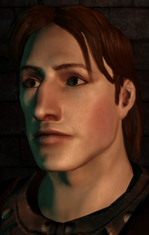

Gavin NPC for BG2, BGT, BGII:EE, or EET
Overview
This mod adds the NPC Gavin Mor to your BG2 game. Gavin is a Dawnbringer of Lathander.
If you met Gavin in Baldur's Gate, you may pick up where you left off or you may decide that you met him for the first time in Athkatla. The choice is yours.
Once in your party, Gavin will banter with all BioWare NPCs. He has an extensive friendship track and can be romanced
by any female Bhaalspawn whose wisdom and charisma are 8 or higher. Enjoy!
Compatibility
This mod is designed to work with Baldur's Gate II: Shadows of Amn with or
without the Throne of Bhaal expansion pack. The mod should be compatible with other
WeiDU mods.
Installation
BGII:EE
If you use BGII Enhanced Edition from GOG or Steam, you need to prepare your game with
modmerge before
installing any mods.
Windows
Gavin for BG2 is packaged and installed with WeiDU
and is distributed as a self-extracting archive. To install, simply double-click
the archive and follow the instructions on screen.
Alternatively the files can be extracted from the archive using
WinRAR. If properly extracted, you should
have a gavin_bg2 folder and setup-gavin_bg2.exe in your
BG2 folder. To install, simply double-click
setup-gavin_bg2.exe and follow the instructions on screen.
Please run setup-gavin_bg2.exe in your BG2
folder to reinstall, uninstall or otherwise change components.
Mac OS X
If the mod was previously installed, uninstall it before extracting the
new version. Gavin for BG2 is packaged and installed with WeiDU.
To install, simply extract the contents of the mod into your BG2 directory. If
properly extracted, you should have a gavin_bg2 folder, setup-gavin_bg2,
and setup-gavin_bg2.command in your BG2 directory.
To install, simply double-click setup-gavin_bg2.command and
follow the instructions on screen.
Linux
Extract the contents of the mod to the folder of the game you wish to modify.
Download the latest version of WeiDU for Linux from WeiDU.org and copy
WeiDU and WeInstall to /usr/bin. Following that, open a terminal, cd to
your BG2 installation directory, run 'tolower' and answer Y to both queries.
You can avoid running the second option (linux.ini) if you've already ran
it once in the same directory. To save time, the archive is already tolowered,
so there's no need to run the first option (lowercasing file names) either
if you've extracted only this mod since the last time you lower cased file
name. If you are unsure, running tolower and choosing both options is the
safe bet.
Run WeInstall gavin_bg2 in your game folder to install the mod. Then run
wine BGMain.exe and start playing.
Note that this mods assumes that you have oggdec for linux.
Contents
The mod contains several components that can be installed independently
of one another.
Gavin for BG2
This is the main component that will add Gavin to your Shadows of Amn game.
He can be found in the Slums of Athkatla, in the Temple of Ilmater on the roof of the Copper Coronet.
Gavin has frequent banters with the PC. These can be hushed by asking him. If you find his interjections annoying, these can be silenced as well, though he will always react to decisions that offend him.
To continue a committed romance begun earlier, the PC will need to have met his requirements for romance in BG1: female, good-aligned, wisdom of 10 or better, charisma of 12 or better, and not an assassin, bounty hunter, or necromancer. To choose this option, you can recognize the ring you find in the opening dungeon, or you can acknowledge him as "love" in his joining dialogue. To begin a new romance in BG2, do not recognize the ring and avoid calling him "love" in his joining dialogue. In BG2, any female PC with both wisdom and charisma of 8 or better who is not an assassin may begin a new romance.
If the PC is male and if Gavin knew him in BG1, Gavin will have a short romance arc with Imoen after she is recruited in Spellhold.
Gavin heals the PC when below 50% health
Requires Gavin for BG2
Some players appreciated the fact that Gavin would heal the PC when his or her health dropped below 50%, other players did not. Now the component is optional. Please note that if you install this component, you can disable the auto-heal behavior at any time through player-initiated dialogue, but if you don't install the component, he will only heal the PC if you select him and cast the spells manually.
Multi-romance cheat
Requires Gavin for BG2
Applies only to Anomen and Edwin.
You're on your 47th playthrough of BG2, and you really, really wish there was a way that you could get in as many romances as possible. Or maybe you're a saint in real life, but you'd like your pixelated alter-ego to live a more daring lifestyle. Either way, you would like to see all the conflict dialogues, but you don't want relationships to end over them. If you install "No romance kills" you can multi-romance to your heart's content. You'll still get all the conflict dialogues, and somebody may even say that the relationship is over, but it isn't. This component affects Romantic Encounter reactions, too. Gavin will complain, and you'll get the conflict dialogues, but a relationship will never end because you've got too many names on your dance card. If you mortally offend Gavin by telling him off bigtime or kick him out of the party in an exceptionally rude manner, the relationship will end, but it won't be because you were seeing someone else.
Alternate Portraits
Requires Gavin for BG2
This multiple-choice component allows you to optionally install one of six
alterate portraits for Gavin.



Contact Information
Thanks and Acknowledgements
Special thanks cmorgan, Eleima, Grottenolm, Jessception, KIrving, Kitanna, luda, Shaitan, and sibel. They tested, they proofread, they told me when I was being silly. They totally rock.
And thanks as well to the bigg and to Steve for making sure that the mod installs on Linux and Mac OSX!
Extra-special thanks to J for not complaining about sloppy housework, uninspired dinners, and obsessive writing sessions over the last six months
Tools Used in Creation
BAM Workshop by Glenn Flansburg
BAM Batcher by Miloch
Crimson Editor
WeiDU Highlighters by Idobek and cmorgan
IESDP
maintained by igi
Infinity Engine Tileset Map Editor by TheoTeamBG
Infinity Engine Editor Pro by ToddTeamBG
Near Infinity by
Jon Olav Hauglid
DLTCEP by Avenger
Shadowkeeper by Mud-Master
WeiDU by
Wes Weimer and the Bigg
Credits and Copyright Information
This mod is not developed, supported, or endorsed by BioWare, Black Isle Studios,
Interplay Entertainment Corp., Overhaul, Beamdog or the Wizards of the Coast.
All other trademarks and copyrights are property of their respective owners.
Gavin for NPC for Baldur's Gate
II is fair game. Knock yourselves out. Don't repackage or redistribute without the consent of the owner, berelinde, or the mod's current maintiner.
Gavin's theme is a portion of "The Pearl" by Silly Wizard
and is available on the Best of Silly Wizard album, available through Amazon or elsewhere. Good music. You need this.
If Silly Wizard or its agents object to the material included
in this modification, please contact me and I will
remove it... with great reluctance, but fair is fair.
Gavin's friendship theme is Lanagan's Ball, used under license from MusicLoops.com.
The default portrait is an edit based on Alan Rickman as Severus Snape,
a fictional character in the films of J. K. Rowling's Harry Potter series. The same goes for
the "Original alternate" by Kaeloree. The creator of the original photo is sadly unknown to us.
Please let us know if you have more information on the matter.
The portrait "Red tunic, by Miloch" is based on Hans Memling's "Portrait of a Man".
The portrait "Dragon Age style portrait by berelinde" was created using the sprite generator of
Dragon Age: Origin (BioWare, Edmonton Studio).
If you see any artwork in this mod that might conflict with Copyright rules please
let us know as soon as possible, and we will remove the conflicting content immediately.
Version History
Version 23
- (crossmod) reaction to Weathermistress Ada (RE): variable should close the dialogue now properly.
- Updated installer to WeiDU v245
Version 22
- EET: Fate spirit entries of the "BG1 Gavin" will be disabled.
Version 21
- typo corrections
- included hotfix for b!aley.are. The area no longer crashes during night
- corrected the description of the Brown Mold Oil item and usage when created
- corrected the possible instances when Gavin's "aftermath" talk triggered before the "complain about not going to Temple district" talks when he went there alone
- Ring detection in ID now works also if the ring is not in Player1's inventory
- fixed PID triggers if player uses Keldorn or HaerDalis to talk to Gavin
- improved the "Gavin objects to the use of the Silver Dragon eggs in case another mod also did that
- fixed "endless curing by engagement ring" exploit
- -corrected misspelled "GLOABAL" in dialogue/b!talks.d
- removed portraits with unclear copyright status
- corrected setting of "B!GavFirstTime" in two instances in b!talks.d
- (ToB) fixed stuttering/breaking "Chinchilla" dialogue and FINSOL01 interjections
- (ToB) Fate spirit now gives the right spawn choices depending on PC's gender and stats
- (ToB) Gavin no longer hits on no-romance PCs (also in PID)
- (ToB) fixed wrong epilogue for "god, not romanced"
- (ToB) fixed a wrong transition in a LT
- EE-version added
- EET-version added
- (BGII:EE, EET) added silent romance kills for Dorn, Rasaad, Hexxat
- (BGII:EE, EET) added reply options to Dorn's, Rasaad's, and Hexxat's romance to end them with respect to an (BG1) engagement with Gavin
- (BGII:EE, EET) set flag 22 for all Gavin .cres (b!gav08.cre, b!gav13.cre)
- (BGII:EE, EET) disabled all fixes and ids patches
- (crossmod) added compatibility with Skip Chateau Irenicus
- (crossmod) corrected reaction to Chanelle encounter (RE)
- (crossmod) moved master Siman a bit away from Aurora in the area
- (internal) deleted unused files from mod folder
- (internal) handling of audio files via HANDLE_AUDIO
- (internal) included tilesets as tis and removed all tisunpack instances
- (internal) traify-ing of the whole mod. journal entries are in journal-gavin_bg2.tra
- (internal) "MKDIR ~portraits~" from tp2 removed
- (internal) corrected kit.ids patching using [ %TAB%]
- note in the readme that the mod depends on oggdec for linux
- readme: link to modmerge for EE
- Updated installer to WeiDU v240
Version 20 - December 25, 2010
- Updated installer to WeiDU v226
- Fixed typo in b!talks.d
Version 19 - October 24, 2010
- Repaired b!keldorn.baf to include InParty("B!Gavin2")
- In b!getting_rid_of_gavin.baf, replaced InMyArea(), which does not work in area scripts, with Exists(), which does.
- Added See("NPC") to numerous scripts to make sure dialogues do not begin when NPCs are invisible or in different areas.
- Updated installer to WeiDU v221
Version 18 - July 24, 2010
- Fixed joining dialogue... again. Now PCs who broke the engagement in BG1 get more than 1 dialogue choice. (Repaired error introduced in v16)
- Fixed Gavin's auto-heal script so that he will no longer attempt to heal an invisible or sanctuaried PC
- Fixed Windows audio installation script so that it will install BG2 sounds on BGT installations that include BG1 Gavin
- Any character may now create herbal concoctions
- Minsc's belt is now usable by fighters as well as rangers
- Replaced b!aley.* with Keldorn Romance b!aley.* to avoid installation order issues
Version 17 - July 18, 2010
- Fixed Ust Natha dragon egg interjection
Version 16 - May 24, 2010
- Fixed evil PC redemption path, talk 11, and reduced the requirements from B!GavChange>4 to B!GavChange>2.
- Corrected typo in joining dialogue.
- Repaired link in Goody Nell's dialogue
Version 15 - May 17, 2010
- Restored missing parenthesis in b!kilgav.baf and tob/b!kilgav.baf
Version 14 - May 10, 2010
- Prevent Gavin from leaving the party a second time if the PC lets Gavin settle his dispute with Miranda alone
Version 13 - May 7, 2010
- Fixed trigger typo in t3.t16.t3.m5b
- Commented out banter-test HotKey(B) in b!gavs.baf to improve compatibility with eScripts
Version 12 - May 4, 2010
- Prevent talk 14 from happening in the Underdark
- Corrected trigger typos in talk 11 and expanded on the evil-PC redemption a bit
- Fixed two typographical errors in dialogue
- Updated to WeiDU v217
Version 11 - April 30, 2010
- Fixed a typo in Master Grolim's dialogue
- Updated to WeiDU v216
Version 10 - April 27, 2010
- Removed incompatibility with Aurora's Shoes
- Talon Thondar is now named properly
Version 9 - April 25, 2010
- You could ask Gavin about the past prior to his romance variable being set. Now, you have to wait until it's set.
Version 8 - April 25, 2010
- Fixed broken Edwin banter
- Speaking to Lanie before Gavin asked about visitation used to break the script that cued the first dialogue. Now it doesn't.
- Fixed alternate portrait assignment
Version 7 - April 22, 2010
- Fixed Lust Chamber Special
- Fixed redemption alignment change
- Fixed typos
Version 6 - April 22, 2010
- Fixed repeating banter with Mazzy. We're off to a rough start...
Version 5 - April 21, 2010
- Fixed repeating interjection with Jan
Version 4 - April 21, 2010
- Using EXTEND_TOP on ar0900.bcs rather than EXTEND_BOTTOM to improve performance on mega-installations
Version 3 - April 21, 2010
- Fixed PC redemption talk stutter
Version 2 - April 20, 2010
Version 1 - April 20, 2010